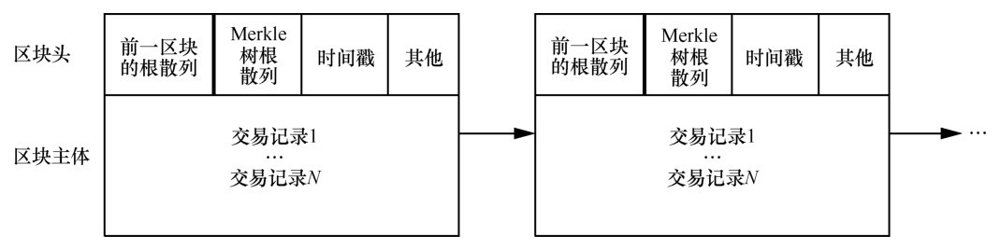
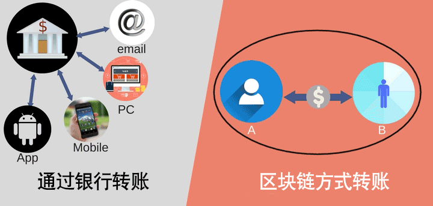
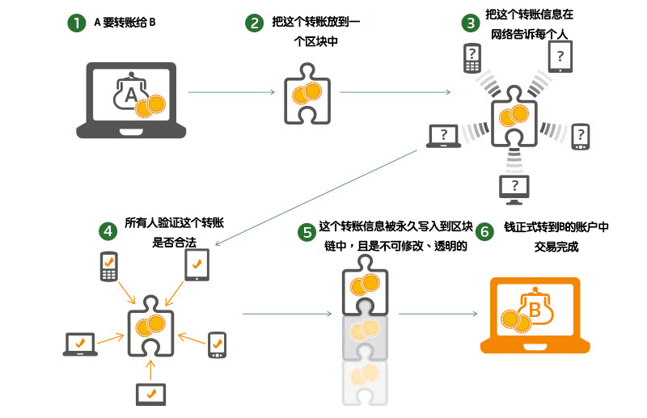

ブロックチェーンとは？
文字通りに見ると：ブロックチェーンは、さまざまな情報を記録した小さなブロックが連結されてできたチェーンです。例えるなら、レンガを一つずつ積み上げていくようなもので、積み上げた後は取り外すことができません。それぞれのレンガには、誰が積んだか、いつ積んだか、レンガに使われた材質など、さまざまな情報が書かれており、これらの情報も変更できません。
コンピュータの観点から見ると：ブロックチェーンは、比較的特殊な分散データベースです。分散データベースとは、データ情報を各コンピュータに個別に保存し、保存される情報が一致しているものです。1、2台のコンピュータが壊れても、情報は失われず、他のコンピュータで確認することができます。
ブロックチェーンは分散型であり、中心となる点はありません。情報は、ブロックチェーンネットワークに参加しているすべてのノードに保存され、ノードのデータは同期しています。ノードは、サーバー、ノートパソコン、スマートフォンなどです。
知っておくべきことは、これらのノードに保存されているデータはすべてまったく同じであるということです。

ブロックチェーンの特徴
非中央集権化：分散型で保存されているため中心点は存在せず、各ノードが中心点であるとも言えます。実生活での応用としては、第三者システム（銀行、支付宝（Alipay）、不動産仲介などはすべて第三者です）が不要になることです。
開放性：ブロックチェーンのシステムデータは公開・透明であり、誰でも参加できます。例えば、部屋を借りる場合、その部屋の以前の賃貸情報や問題が発生したかどうかを知ることができます。もちろん、その中の個人のプライベート情報は暗号化されています。
自律性：ブロックチェーンは、合意に基づく規範とプロトコル（例えば、公開・透明なアルゴリズム）を採用し、各ノードがこの規範に従って動作します。これにより、すべての処理が機械によって行われるため、人情が入り込む余地はありません。「人」への信頼が機械への信頼に変わり、人為的な介入は効果を持ちません。
情報の改ざん不可能性：情報がブロックチェーンに保存されると永久に保存され、変更する方法はありません。51%攻撃については、基本的に実現不可能です。
匿名性：ブロックチェーン上には個人情報はありません。これらはすべて暗号化されており、数字とアルファベットで構成された文字列だからです。そのため、あなたの身分証情報や電話番号が転売されるといった事態は起こりません。
ブロック構造
ブロックは次の2つの部分で構成されます：
1、ブロックヘッダー（Head）：現在のブロックのメタ情報を記録します
2、ブロックボディ（Body）：実際のデータ
含まれるデータは次の図のとおりです：

ブロックチェーンの仕組み
送金を例に説明します：
現在、私たちの送金は中央集権的です。銀行は中央集権的な台帳であり、例えばA口座に400元、B口座に100元あるとします。
AがBに100元を送金する場合、Aは銀行に送金申請を提出します。銀行が検証に通過すると、A口座から100元が差し引かれ、B口座に100元が加算されます。
計算後、A口座は100元引かれて残高300元、B口座は100元加算されて残高200元になります。

ブロックチェーンでの送金の手順は次のとおりです。AがBに100元を送金する場合、Aはネットワーク上でこの送金情報をみんなに伝えます。みんなはAの口座にこの送金を完了するのに十分な金額があるかどうかを確認します。検証が通過すると、みんなはこの情報を自分のコンピュータ上のブロックチェーンに記録し、全員が記録する情報は同期して一致します。こうしてAは無事に100元をBの口座に移すことができます。この過程には銀行は一切関与していないことがわかります。

関連する質問
ブロックチェーンとビットコインの関係は？
ビットコインは2009年にサトシ・ナカモトによって提案され、その後ビットコインの実装を参考にしてブロックチェーン技術が抽出されました。
ビットコインが麺類だとすれば、ブロックチェーンは小麦粉です。その後、小麦粉は麺類だけでなく、饅頭（マントウ）や包子（パオズ）も作れることがわかりました。
なぜ私があなたのブロック情報を保存してあげる必要があるのか？
利益がなければ誰も率先して動かない、簡単に言えば、あなたが私の情報を保存してくれるなら、私はそれに見合った報酬を支払うということです。
ブロックチェーンで理解すべき重要な技術ポイントは？
Hash と 非対称暗号化によって、データが改ざんされないことを保証します：
-
Hash：y = hash(x) は、xに対してハッシュ演算を行いyを得ることです。元の情報xを隠すことができます。なぜなら、yからxを算出することはできないからです。これにより匿名性を実現します。
-
非対称暗号化：公開鍵と秘密鍵は対になっています。公開鍵でデータを暗号化した場合、対応する秘密鍵でのみ復号化できます。秘密鍵でデータを暗号化した場合、対応する公開鍵でのみ復号化できます。
合意アルゴリズム：ノード間のデータの一貫性を保証します。
ブロックチェーンを一言か二言で説明できますか？
できます。
麻雀は中国の伝統的なブロックチェーンプロジェクトであり、4人のマイナーが1組となります。最初に13個の数字からなる正しいハッシュ値を見つけたマイナーが記帳権を獲得し、報酬を受け取ります。